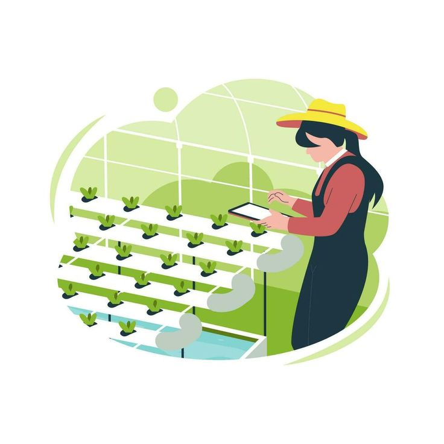

La hidroponía es una técnica de cultivo sin suelo que tiene sus orígenes en civilizaciones antiguas.
En el siglo XX se desarrollaron sistemas modernos que utilizan soluciones nutritivas para el crecimiento de las plantas.